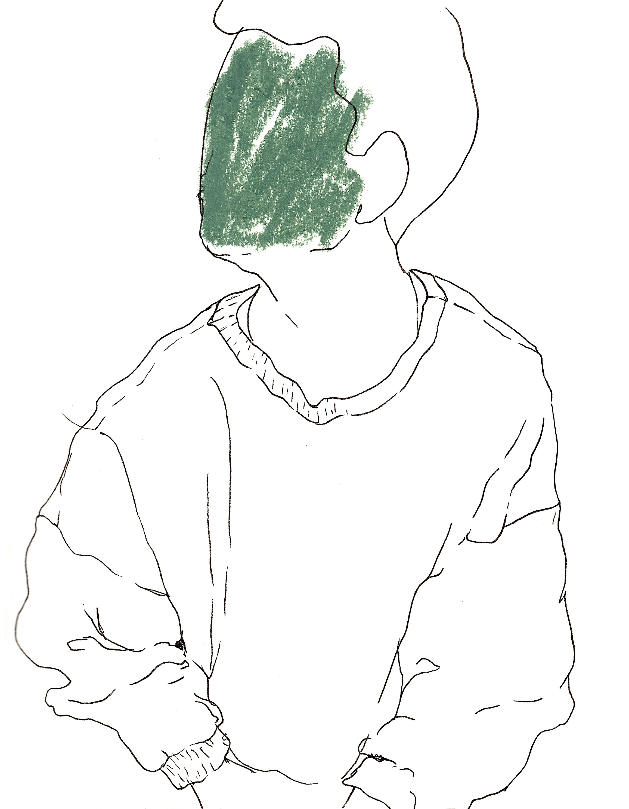

BRYNJA KRISTINS
Education
The Hague University. B.Sc., User Experience Design, 2022.
Berliner Kunsthochschule. Visual Communication Design, 2014 - 2016.
Experience
2019 -
Flæði, Co-Founder
2016 - 2018
DOCH, Co-Founder
2015 - 2016
AttachingIT, Grpahic Designer
Exhibitions
2019
Grand Opening. Flæði, Reykjavík, Iceland
2019
Intimacy of Banality vol. 2. L74, Reykjavík, Iceland.
2017
Intimacy of Banality vol. 1. Gamla Nýló, Reykjavík, Iceland.
2017
Inscapes. Listastofan, Reykajvík, Iceland.
2016
Ten Hours Behind Ahead. Friends are Artists, Leipzig, Germany.
2014
BHS Graduation Show. Gym & Tonic, Reykjavík, Iceland.
Selected Curatorial Projects
2019
Crystalline, Flæði, Reykjavík, Iceland
2019
Mint Foil, Flæði, Reykjavík, Iceland
2019
White Impermanence, Flæði, Reykjavík, Iceland
2019
Ljósið sem fékk ekki að loga, Flæði, Reykjavík, Iceland
2019
Room, Flæði, Reykjavík, Iceland
2019
Two Postcards, Flæði, Reykjavík, Iceland
2019
Draumadís, Flæði, Reykjavík, Iceland
2019
Between Chapters, Flæði, Reykjavík, Iceland
2019
Litríki kvensjálfsins, Flæði, Reykjavík, Iceland
2019
BROT, L74, Reykjavík, Iceland.
2019
Intimacy of Banality vol. 2, L74, Reykjavík, Iceland.
2018
Balance, DOCH, Berlin, Germany
2018
Wendekreis, DOCH, Berlin, Germany
2018
8am Walks, DOCH, Berlin, Germany
2017
Serial Ruins, DOCH, Berlin, Germany
2017
Intimacy of Banality vol. 1, Gamla Nýló, Reykjavík, Iceland.
2017
Souvenirs, DOCH, Berlin, Germany.
2017
The Way Things Grow, DOCH, Berlin, Germany.
2016
Gaze, DOCH, Berlin, Germany
Bibliography
Becket, Rex:
“Flowing Freely: Flæði Art Venue Seeks Artists On The Fringe”, Grapevine, issue 14,
August
2019, p. 24-25
Residencies
2017 Studio residency, Listastofan, Reykjavík.